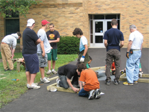
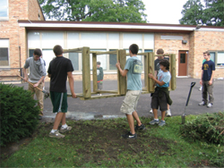
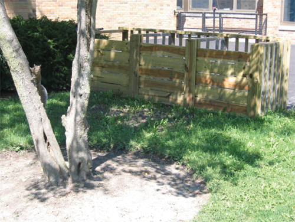
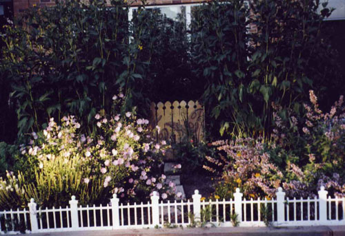
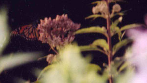
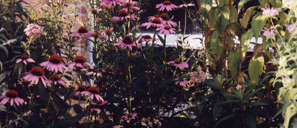
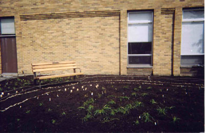
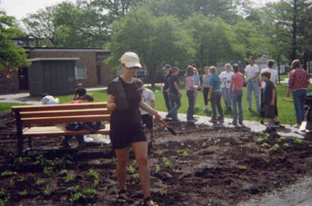
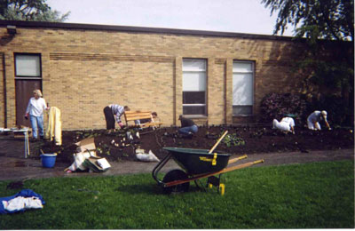

Three-bin Composter Added to McKenzie Schoolyard
|  |
 |
Before school started in the fall, McKenzie’s schoolyard was enhanced with a new three-bin composter. The composter will enhance the curriculum by providing opportunities for hands-on learning regarding soil, ecosystems, and conservation science. In addition, by composting weeds and waste from the butterfly and prairie gardens and the wildlife habitat and returning the composted material to the soil, the McKenzie community can create its own natural fertilizer, while reducing waste sent to landfills and reducing emissions of greenhouse gases caused by transporting that waste.
The composter was built as an Eagle Project organized and led by Nick Bonamici, a member of Wilmette Boy Scout Troop 5 and a 2002 graduate of McKenzie. Funding for the project was obtained from the McKenzie PTA and a contribution from Home Depot.
|
 |
|
McButterfly Garden

The McButterfly garden, planted in 2002, is
against the west wall. It is a raised bed garden that was constructed and
planted by families and landscape committee members. This garden is dedicated to
Alex Dewey, a former McKenzie student . There is a plaque on the wall next to
the garden in his memory.


|
Prairie Friendship Garden

The Prairie Friendship garden was planted in 2004. The
garden was named by the graduating fourth grade class of that year. This class
made prairie themed note cards and sold them to raise funds for a bench that is
dedicated to Lindsay Mueller, also a former McKenzie student. There is a plaque
on the bench dedicated to her memory. Volunteers that planted this garden
included Lindsay's mother and friends, boy scouts, and landscape committee
volunteers. Both gardens were funded by the PTA, school gifts, classroom gifts
and a Gripp grant. Once again, we thank all involved in making these gardens a
reality.

The purpose of these gardens is to provide a
place for students to come outside, enjoy the beauty of the plants, and learn
from nature. Science units that include ladybugs and butterflies or how plants
grow, Illinois history and prairie units, and various art projects are ideal for
using these gardens. All the plants were careful chosen to support these
curriculums. We also hope to implement a recess program where students can check
out art or gardening supplies and work in the gardens.

If you would like to volunteer in the gardens, or
have an idea to use, or improve the gardens please contact your PTA landscape
committee volunteer. We need you to keep our beautiful gardens alive and
growing! For more information about the gardens, a more extensive history of
them, or detailed layout and plant information, contact your child's teacher.
Each classroom has been provided with a booklet about each garden.
|